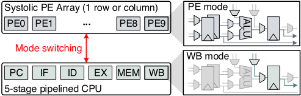
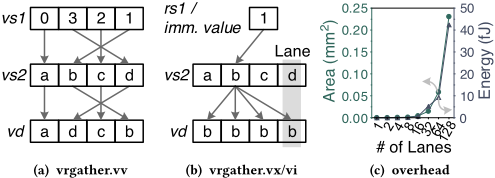
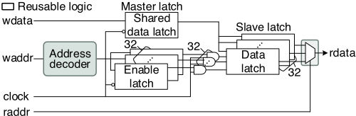
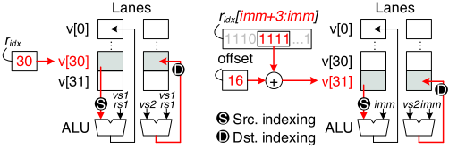
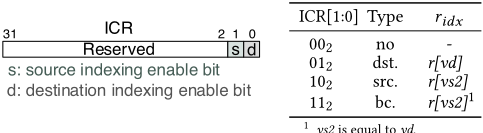
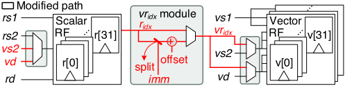
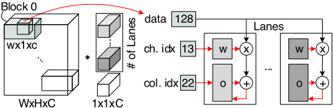
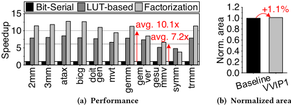
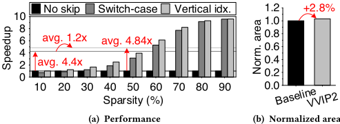

VVIP：面向边缘计算的多功能垂直索引处理器
该论文针对边缘计算中领域专用加速器灵活性不足、多功能处理器靠功能模块简单堆叠导致电路利用率低的问题，提出在 SIMD 处理器内引入垂直索引（vertical indexing）机制。核心做法是将索引操作数直接作为寄存器堆（RF）地址，复用 RF 既有的地址译码器与读数据多路选择器，使 RF 可动态充当查找表（LUT）或累加器，并通过映射到 RISC-V CSR 区域的 ICR 寄存器配置源/目的/广播三种索引类型，与算术逻辑指令组合成 vr_idx 自定义指令。在 64 lane 的 RISC-V 向量处理器上以 28nm 工艺综合评估：面积开销仅 1.1%（VVIP1）与 2.8%（VVIP2）；线性代数基准相比 1-bit-serial 乘法平均加速 10.1 倍；10%-90% 非结构化稀疏 point-wise 卷积相比 switch-case 控制序列平均提升 1.2 倍。该工作属于通用处理器微架构与 ISA 扩展方向，与团队内存/互连 IP 技术栈无直接交集。
边缘计算设备中，领域专用加速器以牺牲操作多样性换取高能效，算法或应用的微小变化可能需要新的专用硬件；将通用处理器与多个功能模块集成虽可兼顾灵活性，但这类方案只是功能电路的叠加、不复用已有电路，导致电路利用率低（如 DL 模式下 ALU 与 RF 长期闲置）。此外，处理模块中占据大部分面积的 RF 及其数据导向逻辑（多路选择器、地址译码器）仅执行非计算的数据搬运，单位面积计算效率低。论文目标是在不显著增加面积的前提下，最大化处理模块内部既有电路的利用率与计算效率。
提出垂直索引机制：将索引变量直接接到 RF 地址译码器，复用 RF 内部既有的地址译码器与读数据多路选择器实现动态寄存器项访问，使 RF 可作为 LUT 或累加器参与运算，无需独立控制序列。定义三类指令形态：vr_idx（各 lane 共享来自标量 RF 的全局索引）、vv_idx（各 lane 访问不同表项）、rv_idx（各 lane 以独立索引访问共享 LUT），评估中仅实现 vr_idx；索引类型（源/目的/广播）由映射到 RISC-V CSR 区域的索引配置寄存器（ICR）配置，vr_idx.vi 从 r_idx 中提取 4 位并固定 offset 16，将 v16-v31 用作 LUT/累加器。应用涵盖：基于 LUT 的多位串行乘法（k≈3 或 4 分组，配合 vshiadd.vi 移位加指令）、distributed arithmetic、bit-serial factorization，以及基于块级编码（data/channel/column 索引）的稀疏 point-wise 卷积。RF 采用跨寄存器共享 data master latch 的低面积电路（论文称面积较独立 master latch 的触发器型 RF 为 0.75 倍），垂直索引不修改 RF 内部电路。
VVIP1（RV32IMV，无乘法器基线）中 vr_idx 模块及相关路径修改的面积开销为 1.1%
VVIP2（RV32IMVM）面积开销为 2.8%，整体面积开销小于 2.8%
Polybench/C 线性代数 11 个整数基准上，采用 4-bit 分组索引执行 (3) 式与 (6) 式分别取得平均 7.2 倍与 10.1 倍的性能提升（对比 1-bit-serial 乘法）
稀疏 point-wise 卷积（224x224x3 输入、64 个 1x1x3 kernel、稀疏度 10%-90% 步进 10%）：启用 zero-skipping 编码后，switch-case 与垂直索引相比稠密运算分别平均提升 4.4 倍与 4.84 倍；垂直索引相比 switch-case 平均提升 1.2 倍，稀疏度越低差距越明显
共享 data master latch 的 RF 设计面积较独立 master latch 的触发器型 RF 为 0.75 倍
与以往通过叠加功能模块构建多功能处理器的工作（如将可重构 systolic PE 阵列与 5 级流水 CPU 集成、或在向量处理器旁添加 matrix engine 并扩展 ISA）不同，VVIP 不新增独立引擎或专用寄存器，而是复用处理模块内已有的 RF 地址译码器与数据导向逻辑，使 RF 兼作 LUT/累加器，从而以近似恒定、与并行度无关的开销实现动态索引；相比 RISC-V vrgather 等水平索引指令需要 lane 间 n:n 互连（硬件复杂度随 lane 数二次增长），垂直索引将索引范围限制在处理模块内部，开销仅与寄存器数量相关。
相关度级别：low
命中能力域：无明显对应
理由：论文贡献集中在 RISC-V SIMD 向量处理器的 ISA 扩展与微架构设计（垂直索引指令、RF 复用为 LUT/累加器、低面积 RF 电路），属于通用处理器/边缘计算方向。团队七项能力域均限定在内存（LPDDR/DDR/HBM）与互连（UCIe）IP 的架构、RTL 实现与验证交付：论文不涉及任何存储/互连协议、接口时序、PHY 或控制器设计；验证与实现方面仅使用自研 cycle-accurate C 模拟器和常规 SystemVerilog + Design Compiler 综合测面积，未涉及 UVM、形式验证、emulation/FPGA 原型、覆盖率方法或验证自动化等团队核心方法学。因此与团队能力域无实质关联，与上游 catalog 的'无明显对应'标注一致。
建议动作：暂不相关
Hyungjoon Bae
韩国科学技术院（KAIST），大田，大韩民国
jo_on@kaist.ac.kr
本文提出了一种面向边缘计算的、基于单指令多数据架构的多功能垂直索引处理器（VVIP）。在 VVIP 中，垂直源索引与目的索引指令经过定制，以实现面积高效的计算。所提出的索引方法通过在计算中使用更多的寄存器和数据导向逻辑，在处理模块内对数据进行重排序。特别地，VVIP 通过将寄存器堆用作查找表或累加器，支持多位串行乘法与稀疏数据运算。经过在向量处理器上的验证，VVIP 的面积开销低于 2.8%。在线性代数基准测试中，其平均计算速率比 1 位串行乘法快 10.1 倍；与传统控制序列相比，在非结构化稀疏逐点卷积任务中平均性能提升 1.2 倍。
索引指令，单指令多数据，RISC-V，边缘计算
Hyungjoon Bae、Da Won Kim 和 Wanyeong Jung。2024。VVIP：面向边缘计算的多功能垂直索引处理器。载于第 61 届 ACM/IEEE 设计自动化会议（DAC '24），2024 年 6 月 23 日至 27 日，美国加利福尼亚州旧金山。ACM，美国纽约州纽约，6 页。https://doi.org/10.1145/3649329.3655676
先前的研究通过将通用处理器与多个模块相集成，在一定程度上解决了这些问题 [4, 6]。具有增强数据处理能力的多功能处理器能够在平衡应用范围与计算效率的同时成功完成计算。然而，这些处理器仅被构建为功能模块的简单叠加，并未复用现有电路。这些方法的电路利用率较低，因此仍有改进空间。
本研究提出了一种面向边缘计算设备设计的多功能垂直索引处理器（VVIP），其能够最大化内部电路的利用率。基于单指令多数据（SIMD）的 VVIP 利用自定义的源索引与目的索引，在计算中激活寄存器和数据导向逻辑。所提出的索引方法无缝地集成了算术指令，并将地址操作数转换为垂直索引操作数。VVIP 通过动态索引直接访问寄存器文件（RFs），将其用作查找表（LUTs）或累加器，从而减少了传统控制序列索引所带来的计算开销。VVIP 通过将 RF 索引融入数据处理路径，加速了位串行乘法和稀疏数据处理等关键计算任务。由于该方法在很大程度上复用了原始 RF 中的电路，与传统的水平索引指令不同，所提出的垂直索引仅带来极小且恒定的开销，且该开销不受并行度的影响。
VVIP 在 RISC-V 向量处理器上得到了验证。该处理器采用自研的周期精确仿真器进行评估，硬件面积则采用 28 nm CMOS 工艺库进行测量。与 1 位串行乘法相比，其面积开销低于 2.8%，在线性代数基准测试上的平均执行加速比达到 10.1 倍。与传统的 switch-case 语句序列相比，在非结构化（10-90%）稀疏逐点卷积上，其平均性能提升达到 1.2 倍。

本文聚焦于在电路层面优化处理模块，以实现面积高效的计算。由于算术逻辑单元（ALU）包含活动率高的关键组件，进一步优化的空间有限。然而，寄存器堆（RF）由于其本质上非计算的特性，活动率低于 ALU

并且占据了模块内的大部分面积，导致单位面积的计算效率较低。这一局限归因于数据导向逻辑（data-steering logic），例如多路选择器和地址译码器，它们仅以固定格式处理非计算性数据。换言之，这阻止了 RF 参与除数据供给和存储之外的信息处理任务。
解决这一局限的一种方法是利用数据导向逻辑接收包含计算信息的变量地址作为索引，进而激活 RF 参与运算。现有的向量指令集架构（ISA），例如 RISC-V，通过基于水平索引的 gather 指令 [1] 实现了这一点。这些指令促进了向量处理器中各处理模块（称为 lane）之间的数据交换，如图 2b 所示。图 2a 和图 2b 描绘了 RISC-V 向量扩展中 vrgather 指令的示例，其中索引源为寄存器或立即数，目的操作数为向量寄存器。在 vrgather.vv 的情况下，每个 lane 使用其索引寄存器中的值，并从源寄存器中的对应位置将该值复制到其目的寄存器。这可表示为：
其中 vd、vs2、vs1 分别表示目的、第二源和第一源向量操作数；i 表示向量元素的索引。vrgather.vx 和 vrgather.vi 均只使用一个全局索引，该索引存储在标量寄存器中或以立即数形式给出。因此，所有 lane 执行广播操作，从索引值所指示的源寄存器中获取相同的数据。它们可表示为：
其中 rs1 表示第一标量源操作数。
gather 指令使 RF 参与到了计算中。然而，数据在处理模块之间进行交换，这需要额外的 n:n 连接硬件。特别地，硬件复杂度随 lane 总数呈二次方增长，如图 2c 所示。这限制了用于实现高并行度的 lane 数量，尤其是在面积和功耗受限的硬件中。
上述缺点可以通过将索引的范围缩小到每个处理模块内部、而非模块之间来弥补。现有的数据导向逻辑已支持对 RF 条目的 1:n 寻址；因此，它可以被重新用于可变索引。由于这种索引开销仅受寄存器数量影响，而不受处理模块数量影响，因此它带来的开销与并行度无关。因此，本研究探索垂直索引而非水平索引。
1: 输入：𝑖（被乘数）、𝑤0、𝑤1、𝑤2（乘数）
2: 输出：𝑜 = 𝑖𝑤0 + 𝑖𝑤1 + 𝑖𝑤2
3: 初始化：𝑅𝐸𝐺[0] = 𝑤0，𝑅𝐸𝐺[1] = 𝑤1，𝑅𝐸𝐺[2] = 𝑤2，𝑜 = 0
4: for 𝑖𝑛𝑑𝑒𝑥 in {0, 1, 2} do
5: switch 𝑖𝑛𝑑𝑒𝑥 do
6: case 0: 𝑤 = 𝑅𝐸𝐺[0]
7: case 1: 𝑤 = 𝑅𝐸𝐺[1]
8: case 2: 𝑤 = 𝑅𝐸𝐺[2]
9: end switch
10: 𝑜 = 𝑜 + 𝑖 × 𝑤
11: end for
1: 输入：𝑖（被乘数），𝑤0，𝑤1，𝑤2（乘数）
2: 输出：𝑜 = 𝑖𝑤0 + 𝑖𝑤1 + 𝑖𝑤2
3: 初始化：𝑅𝐸𝐺[0] = 𝑤0，𝑅𝐸𝐺[1] = 𝑤1，𝑅𝐸𝐺[2] = 𝑤2，𝑜 = 0
4: for 𝑖𝑛𝑑𝑒𝑥 in {0, 1, 2} do
5: 𝑤 = 𝑅𝐸𝐺[𝑖𝑛𝑑𝑒𝑥]
6: 𝑜 = 𝑜 + 𝑖 × 𝑤
7: end for
不具备垂直索引的传统系统使用 if-else 和 switch-case 语句等控制序列来支持动态的寄存器表项访问。相反，垂直索引将索引变量直接分配给寄存器堆（RF）的地址译码器；因此，在将 RF 用作查找表（LUT）或累加器时，无需单独的控制命令。算法 1 和算法 2 展示了在加权和示例中，索引分别用作常量和用作变量时寄存器访问方面的编程差异。对比算法 1 的第 5 至 9 行与算法 2 的第 5 行可以看出，基于垂直索引的寄存器访问确保了程序的简洁性与直观性。这种索引并不局限于源操作数，也可以用于目的操作数。垂直索引具有两条索引路径：一条使所有处理模块接收相同的索引，另一条使每个模块接收不同的索引，类似于 gather 指令，如式 (1) 和 (2) 所示。从编程角度来看，这两种情况仍然可以通过单条指令进行访问，同时保持单指令多数据（SIMD）特性。
其中 𝑘 约为 3 或 4，这对于配置累加器来说是合适的取值。式 (6) 中最右侧括号内的值首先以 ( 𝑎 𝑘𝑛 + 𝑘 - 1 ... 𝑎 𝑘𝑛 + 1 𝑎 𝑘𝑛 ) 2 作为垂直索引在累加器中进行移位与累加，然后再乘以最终权重 ( 𝑎 𝑘𝑛 + 𝑘 - 1 ... 𝑎 𝑘𝑛 + 1 𝑎 𝑘𝑛 ) 2。与其他方法类似，当具备垂直索引能力时，该方法保持了寄存器堆（RF）、加法器、移位器和数据导向逻辑的高电路活动度。

稀疏数据处理。稀疏矩阵可以通过使用非零数据及其索引来进行编码。这些索引可用作查找表（LUT）或累加器的垂直地址，以执行诸如稀疏矩阵-向量乘法之类的稀疏运算 [2, 8]。编码数据处理能够在处理模块内实现 RF、算术逻辑单元（ALU）和数据导向逻辑的高活动度。
架构。所提出的垂直索引方法可与多种单指令多数据（SIMD）架构相结合。在本研究中，VVIP 实现于一个基于 RISC-V 的向量处理器上，该处理器的每个向量通道包含一个 ALU 以及 32 个 32 位整数寄存器。
面积高效且高活动度的 RF 电路。如图 3 所示，数据主锁存器在所有寄存器之间共享，以提高 RF 的面积效率。与采用独立数据主锁存器的基于触发器的 RF 相比，该设计的面积减少了 0.75 倍。当发生写访问时，在时钟值为低电平时，写数据以及由地址译码器激活的写使能信号被主锁存器捕获；当时钟值为高电平时，锁存的数据被存储到从锁存器中。锁存的写使能信号与时钟信号通过 AND 门组合以生成脉冲时钟，从而仅使能一个数据从锁存器。当发生读访问时，读数据由多路选择器根据读地址进行选择。垂直索引使用相同的读/写机制，无需修改这些 RF 内部电路。特别地，它通过将地址译码器和数据读多路选择器复用于索引操作，提高了 RF 的活动度。
vr idx 指令。如果所有向量通道接收的是全局索引，例如 (2) 中所示的 vrgather.vx 和 vrgather.vi；而当在向量通道内部进行垂直索引时，则可表示为 vr idx。共享的垂直索引值来自标量寄存器堆（RF）的一个表项。该指令涉及标量与向量 RF 及其数据导向逻辑。
vv idx 指令。如果所有向量通道访问不同的表项，则可表示为 vv idx。这等价于将 (1) 中所示的 vrgather.vv 的索引方式设置为垂直。该指令可以通过复用向量 RF 及其数据导向逻辑来实现，但每个通道反复的 RF 访问可能会加重其读端口的负担。
rv idx 指令。如果所有向量通道通过各自的垂直索引使用共享的查找表（LUT），则表示为 rv idx。索引值来自所有向量通道，每个索引值指向一个标量 RF 表项。该指令可以通过复用向量通道中的数据导向逻辑来实现。然而，它还需要额外的数据通路，以便将标量 RF 的值广播到所有向量通道。

vridx .vv/vx
vridx .vi
| ICR[1:0] | Type | r 𝑖𝑑𝑥 |
|---|---|---|
| 00 2 | no | - |
| 01 2 | dst. | r[vd] |
| 10 2 | src. | r[vs2] |
| 11 2 | bc. | r[vs2] 1 |
| ICR[1:0] | Type | r 𝑖𝑑𝑥 |
.

(a) ICR 位域
配置

In this study, only vr idx indexing is implemented in our evaluation setup. Figure 4 depicts the vr idx instructions according to the type of source operands. All arithmetic and logic instructions can be combined with three types of indexing: source, destination, and broadcast. Broadcast indexing is used when both the source and destination are vertically indexed by the same value. The indexing type is configured in the lower two bits of the indexing configuration register (ICR), as shown in Figure 5a. ICR is mapped to the control and status register (CSR) region of the RISC-V and is read and written with legacy CSR instructions. Figure 5b depicts the r 𝑖𝑑𝑥 value corresponding to the ICR bit.
In the case of vr idx .vv and vr idx .vx instructions, r 𝑖𝑑𝑥 points directly to the RF. Thus, the operations are expressed as follows:
where op is the ALU opcode. In the case of vr idx .vi , some bits of the r 𝑖𝑑𝑥 value are extracted and used as an index to support (3) and (6). VVIP uses a 4-bit width r 𝑖𝑑𝑥 [ 𝑖𝑚𝑚 + 3 : 𝑖𝑚𝑚 ] , which is a divisor of 32 bits, and fixes the offset of the index to 16. Therefore, v16-v31 in each lane are used as a LUT or accumulators.
Figure 6 depicts the modified data paths within the scalar and vector processor for vr idx instructions. Since the vector arithmetic
| Algorithm 3 LUT-based multiplication with vertical indexing | Algorithm 3 LUT-based multiplication with vertical indexing | Algorithm 3 LUT-based multiplication with vertical indexing |
|---|---|---|
| 1: | Inputs: 𝑖 0 - 𝑖 ( 𝐿 - 1 ) ,𝑤 | Inputs: 𝑖 0 - 𝑖 ( 𝐿 - 1 ) ,𝑤 |
| 2: | Output: 𝑜 = 𝐿 - 1 𝑙 = 0 𝑖 𝑙 × 𝑤 | Output: 𝑜 = 𝐿 - 1 𝑙 = 0 𝑖 𝑙 × 𝑤 |
| 3: | Initialize: v16 - v31 = 0 - 15w (partial products), v2 = 0 | Initialize: v16 - v31 = 0 - 15w (partial products), v2 = 0 |
| 4: | for 𝑙 = 0 to 𝐿 - 1 do | for 𝑙 = 0 to 𝐿 - 1 do |
| 5: | r31 = 𝑖 𝑙 | r31 = 𝑖 𝑙 |
| 6: | vmv.v.i v1, 0 | // v1 = 0 |
| 7: | csrrwi x0, ICR, 0b10 | // src. indexing |
| 8: | vshiadd.vi v1, v31, | 0 // v1 = vr31[3:0] « 0 + v1 |
| 9: | vshiadd.vi v1, v31, 4 // v1 = vr31[7:4] « 4 + | v1 |
| 10: | vshiadd.vi v1, v31, 8 // v1 = vr31[11:8] « 8 + v1 | vshiadd.vi v1, v31, 8 // v1 = vr31[11:8] « 8 + v1 |
| 11: | vshiadd.vi v1, v31, 12 // v1 = vr31[15:12] « 12 + v1 | vshiadd.vi v1, v31, 12 // v1 = vr31[15:12] « 12 + v1 |
| 12: | vshiadd.vi v1, v31, 16 // v1 = vr31[19:16] « 16 + v1 | vshiadd.vi v1, v31, 16 // v1 = vr31[19:16] « 16 + v1 |
| 13: | vshiadd.vi v1, v31, 20 // v1 = vr31[23:20] « 20 + v1 | vshiadd.vi v1, v31, 20 // v1 = vr31[23:20] « 20 + v1 |
| 14: | vshiadd.vi v1, v31, 24 // v1 = vr31[27:24] « 24 + v1 | vshiadd.vi v1, v31, 24 // v1 = vr31[27:24] « 24 + v1 |
| 15: | vshiadd.vi v1, v31, 28 // v1 = vr31[31:28] « 28 + v1 | vshiadd.vi v1, v31, 28 // v1 = vr31[31:28] « 28 + v1 |
| 16: | csrrwi x0, ICR, 0b00 | // no indexing |
| 17: | vadd.vv v2, v1, v2 | // v2 = v1 + v2 |
| 18: | end for | end for |
| Algorithm 3 LUT-based multiplication with vertical indexing | Algorithm 3 LUT-based multiplication with vertical indexing | Algorithm 3 LUT-based multiplication with vertical indexing |

instructions of RISC-V do not use the rs2 port, they reuse this path to read the global index. For the vr idx .vv and vr idx .vx instructions, 𝑟 𝑖𝑑𝑥 is used as the vertical index, whereas for the vr idx .vi instruction, four bits are extracted from 𝑟 𝑖𝑑𝑥 located by imm and the value added with the offset is used as the vertical index. The calculated v 𝑟 𝑖𝑑𝑥 dynamically indexes the vector RF to access the desired location. This modification presents low overhead since every vector processing module shares only one v 𝑟 𝑖𝑑𝑥 module, and it requires only the addition of tiny index selectors and an offset adder.
| Name | Equation 1 | Output size |
|---|---|---|
| 2mm | 𝐷 = 𝛼𝐴𝐵𝐶 + 𝛽𝐷 | 800 × 1200 × |
| 3mm | 𝐸 = ( 𝐴𝐵 )( 𝐶𝐷 ) | 800 1100 |
| atax | 𝑦 = 𝐴 𝑇 ( 𝐴𝑥 ) | 2100 × 1 |
| bicg | 𝑞 = 𝐴𝑝 , 𝑠 = 𝐴 𝑇 𝑟 | 2100 × 1, 1900 × 1 |
| doitgen | 𝐴 ( 𝑟,𝑞,𝑝 ) = 𝑆 - 1 ∑︁ 𝑠 = 0 𝐴 ( 𝑟, 𝑞, 𝑠 ) 𝑥 ( 𝑝, 𝑠 ) | 150 × 140 × 160 |
| mvt | 𝑞 = 𝑞 + 𝐴𝑝 , 𝑠 = 𝑠 + 𝐴 𝑇 𝑟 | 2000 × 1, 2000 × 1 |
| gemm | 𝐶 = 𝛼𝐴𝐵 + 𝛽𝐶 | 1000 × 1100 |
| gemver | ˆ 𝐴 = 𝐴 + 𝑢 1 𝑣 1 + 𝑢 2 𝑣 2, 𝑤 = 𝛼 ˆ 𝐴𝑥 , 𝑥 = 𝛽 ˆ 𝐴 𝑇 𝑦 + 𝑧 | 2000 × 2000, 2000 × 1, 2000 × 1 |
| gesummv | 𝑦 = 𝛼𝐴𝑥 + 𝛽𝐵𝑥 | 1300 × 1 |
| symm | 𝐶 = 𝛼𝐴𝐵 + 𝛽𝐶 , where 𝐴 = 𝐴 𝑇 | 1000 × 1200 |
| trmm | 𝐵 = 𝐴𝐵 , where 𝑎 𝑖 𝑗 = 0 ( 𝑖 < 𝑗 ) | 1000 × 1200 |
| Name | Equation 1 | Output size |
并行度。基线与 VVIP 向量处理器的通道数均设置为 64。
工作负载。VVIP 通过两种基于 RISC-V 的向量设计进行分析：采用 RV32IMV 指令集架构（ISA）的 VVIP1 和采用 RV32IMVM ISA 的 VVIP2。VVIP1 的性能通过从线性代数 Polybench/C 测试套件 [9] 中选取的 11 个基准测试程序进行评估，这些程序列于表 1 中。这些基准测试程序被修改为整数版本，并以 RISC-V 向量扩展汇编语言 [1] 编写。所有代码均采用掩码（masking）方式编写；因此，即使数据数量与通道数不匹配，也会进行计算。运算精度通过与基线 C 基准测试结果的对比进行验证。VVIP2 的评估方式为：对一幅 224x224x3 的图像与 64 个 1x1x3 卷积核执行逐点卷积，并以 10% 为步长将图像稀疏度从 10% 变化至 90%。

环境。通过修改 RISC-V 编译器实现了定制的垂直索引指令。所有代码均使用周期精确的内部 C 模拟器进行评估。硬件采用 SystemVerilog 设计，并使用 Synopsys Design Compiler 在 CMOS 28nm 工艺库上进行综合，以测量面积。
图 8 展示了基准测试评估结果以及在 1 位串行向量处理器和 VVIP1 上综合得到的面积。在基线处理器中，执行 32 位乘法需要 32 次左移加法操作，从而降低了所有应用的运算速度。然而，VVIP1 采用 4 位拆分索引执行式 (3) 和式 (6) 的运算，分别取得了平均 7.2 倍和 10.1 倍的性能提升。由于大多数应用表现出输出固定（output stationary）特性，因式分解展现出最高的平均性能。v 𝑟 𝑖𝑑𝑥 模块及相关路径修改带来了 1.1% 的面积开销。
图9比较了在具有内置乘法器的向量处理器和 VVIP2 中，采用与不采用块级编码（block-level encoding）时的稀疏逐点卷积（sparse point-wise convolution）性能与综合面积。当启用带编码的零跳过（zero-skipping）时，switch-case 语句和垂直索引均快于稠密运算，平均分别取得 4.4 倍和 4.84 倍的性能提升。与 switch-case 语句相比，垂直索引的性能提升平均为 1.2 倍。由于稀疏度较低时比稀疏度较高时会产生更多分支，因此当稀疏度较低时，二者之间的性能差距更为显著。VVIP2 展现出最高的面积高效计算能力，其面积开销仅为 2.8%。
本研究提出了一种采用垂直索引、可实现面积高效计算的通用单指令多数据（SIMD）处理器，称为 VVIP。

所提出的索引机制与算术指令相结合，利用了处理模块内的所有主要电路，例如寄存器堆（RF）和算术逻辑单元（ALU），以及数据导向逻辑。由于复用了处理模块内的现有电路，垂直索引的设计开销极小。实验结果表明，平均而言，VVIP 比 1 位串行乘法快 10.1 倍，比基于 switch-case 语句的稀疏逐点卷积快 1.2 倍。